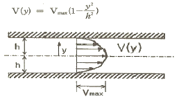
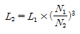
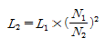
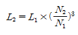
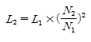
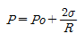
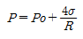
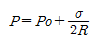
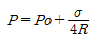

소방설비기사(기계분야) (2005-09-04 기출문제)
1과목: 소방원론
1. 건물화재시 연기가 밖으로 이동하는 주된 요인이 아닌 것은?
- 굴뚝효과
- 건물내부의 냉방 작동
- 온도상승에 따른 기체의 팽창
- 기후조건
(정답률: 52%)

2. 다음 중 사염화탄소 소화기를 설치할 수 있는 장소는?
- 사무실
- 무창
- 지하층
- 환기가 잘 되는 실내
(정답률: 55%)
3. 유전지대의 화재는 질소폭약을 투하해서 소화를 한다. 이렇게 소화하는 효과는?
- 희석효과
- 부촉매효과
- 냉각효과
- 질식효과
(정답률: 19%)
4. 물에 황산을 넣어 묽은 황산을 만들때 발생되는 열은?
- 연소열
- 분해열
- 용해열
- 자연발열
(정답률: 48%)
5. 연소와 관계 깊은 화학반응은?
- 중화반응
- 치환반응
- 환원반응
- 산화반응
(정답률: 70%)
6. 가연성 액체에 점화원을 가져와서 인화된 후에 점화원을 제거하여도 가연물이 계속 연소되는 최저온도를 무엇이라 하는가?
- 인화점
- 폭발온도
- 연소점
- 자동발화점
(정답률: 52%)
7. 골재를 사용한 콘크리트 중 내화성이 가장 좋지 못한 것은?
- 화강암
- 현무암
- 인공경량 골재
- 안산암
(정답률: 24%)
8. 다음 설명 중 가장 옳은 것은?
- 가연물질의 연소에 필요한 산화재의 역할을 할 수 있는 것으로 오존, 불소, 네온이 있다.
- 아르곤은 산화 분해 흡착반응에 의해 자연 발화를 일으킬수 있다.
- 활성화 에너지의 값이 적을수록 연소가 잘 이루어진다.
- 인화온도가 낮은 것은 연소온도가 높다.
(정답률: 58%)
9. 다음 중 액체탄화수소 수송시 정전기에 의한 화재발생을 억제하기 위한 조치로서 적합하지 않은 것은?
- 유속을 이하로 낮게 한다.
- 배관을 와류가 생성되지 않게 설계한다.
- 불순물 등의 제거시 비전도성의 조밀한 필터를 사용한다.
- 수송 이송시 낙차를 작게 한다.
(정답률: 53%)
10. 가연성가스를 액화시켜 저장한 저장탱크 내의 액화가스가 누설되어 저장탱크 상부에 부유 또는 확산하여 있다가 착화원과 접촉할 경우 폭발을 일으키며 이것으로 인하여 저장탱크 또는 저장용기가 파열되어 그 내부에 있던 액화가스가 공중으로 확산하면서 화구 형태의 폭발현상을 보여 줄 때를 말한다. 이런 것을 무엇이라 하는가?
- 플래시오버
- 오일오버
- 블레비현상
- 폭굉현상
(정답률: 48%)
11. 다음 중 자연발화 조건이 아닌 것은?
- 열전도율이 클 것
- 발열량이 클 것
- 주위의 온도가 높을 것
- 표면적이 넓을 것
(정답률: 64%)
12. 가연물질이 열분해되어 생성된 가스 중 독성이 가장 큰 것은?
- 일산화탄소
- 염화수소
- 이산화탄소
- 포스겐가스
(정답률: 57%)
13. 목재인 가연물이 착화에너지가 충분하지 못하여 연소하지 못하고 분해가스만 방출하는 현상을 무엇이라 하는가?
- 탄화현상
- 경화현상
- 조해현상
- 풍해현상
(정답률: 54%)
14. 인화성이 있는 것은?
- 질소
- 이산화탄소
- 아황산가스
- 일산화탄소
(정답률: 36%)
15. 연쇄반응과 관계가 없는 것은?
- 증발연소
- 분해연소
- 작열연소
- 불꽃연소
(정답률: 53%)
16. 경유화재가 발생할 때 주수소화가 부적당한 이유는?
- 경유는 물보다 비중이 가벼워 물위에 떠서 화재확대의 우려가 있으므로
- 경유는 물과 반응하여 유독가스를 발생하므로
- 경우의 연소열로 인하여 산소가 방출되어 연소를 돕기 때문에
- 경유가 연소할 때 수소가스를 발생하여 연소를 돕기 때문에
(정답률: 60%)
17. 제 1류 위험물로서 그 성질이 산화성 고체인 것은?
- 아연소산염류
- 과염소산
- 금속분류
- 셀룰로이드류
(정답률: 49%)
18. 표면연소만 일어나는 것은?
- 목재
- 합성수지
- 숯
- 섬유질
(정답률: 59%)
19. 내장재의 발화시간에 영향을 주는 요소가 아닌 것은?
- 열전도율
- 발화점
- 화염확산 속도
- 복사플럭스
(정답률: 20%)
20. 화학소화 중 연쇄반응억제에 의한 소화방법으로 가장 옳은 것은?
- 화학반응으로 탄산가스가 발생하여 소화한다.
- 불꽃연소에 주로 적응되는 소화방법이다.
- 급속화재 화약화재 등에 적응되는 소화방법이다.
- 할로겐화합물인 경우 할로겐 원자수의 비율이 작을수록 소화효과가 크다.
(정답률: 27%)
2과목: 소방유체역학
21. 온도 20℃, 압력5abr에서 비체적0
- 0.341
- 3.41
- 34.1
- 341
(정답률: 27%)
22. 손바닥을 비비면 열이 나지만 반대로 손바닥에 열을 가한다고 해서 손바닥이 비벼지지 않는다. 이 현상을 설명하는 열역학 법칙은?
- 제 0 법칙
- 제 1 법칙
- 제 2 법칙
- 제 3 법칙
(정답률: 42%)
23. 안지름이 240mm인 관속을 흐르고 있는 공기의 평균 풍속이 이면 25m/sec이면 공기는 매초 몇 kg이 흐르겠는가? (단, 관속의 정압은 2.45×105Pa abs, 온도는 15℃, 공기의 기체상수 R=287 J/kg.k 이다.)
- 2.48
- 3.35
- 4.48
- 1.35
(정답률: 26%)
24. 길이가 1km인 직관에 10m3의 물이 흐르고 있다. 이때 손실수두를 25m로 한정하기 위해 필요한 최소관경은 몇 mm인가? (단, 관 마찰 계수는 0.03이다.)
- 167
- 223
- 250
- 334
(정답률: 32%)
25. 수압기에서 피스톤의 지름이 각각 10mm, 50mm 이고 큰 피스톤에 1000N의 하중을 올려 놓으면 작은 쪽 피스톤에 얼마의 힘이 작용하게 되는가?
- 40N
- 400N
- 25000N
- 245000N
(정답률: 29%)
26. 폭 W를 갖는 평행 평판 사이의 포물선 유속 분포가 다음과 같을 때 운동량 수정계수 값은?

- 2/3
- 2/5
- 6/5
- 8/3
(정답률: 22%)
27. 원심식 송풍기에서 회전수를 변화시킬 때 동력변화를 구하는 식으로 맞는 것은? (단, 변화 전후의 회전수를 각각 N1, N2 동력을 L1, L2로 표시한다.)




(정답률: 42%)
28. 다음 중 국소 유속을 측정할 수 있는 장치는?
- 오리피스(orifice)
- 벤츄리 미터(venturi)
- 피토 관(Pitot)
- 위어(weir)
(정답률: 42%)
29. 액체가 일정한 유량으로 파이프를 흐를 때 유체속도에 대한 설명으로 틀린 것은?
- 관 단면적에 반비례한다.
- 관 반지름의 제곱에 반비례한다.
- 관 지름에 반비례한다.
- 관 지름의 제곱에 반비례한다.
(정답률: 48%)
30. 스프링클러 헤드의 방수압이 현재보다 4배가 되는 경우 방수량은 몇 배가 되는가?
- √2배
- 2배
- 4배
- 8배
(정답률: 40%)
31. 안지름 25cm인 파이프 속으로 물이 5m/sec의 유속으로 흐른다. 하류에서 파이프의 안지름이 10cm로 축소되었다면 이 부분에서의 유속은 몇 m/sec인가?
- 5.5
- 12.5
- 25.25
- 31.25
(정답률: 38%)
32. 물방울의 반경이 R 외부 압력이 Po일 때 물방울 내부 압력 P는? (단, 물의 표면장력은 σ이다.)




(정답률: 10%)
33. 모세관 점도계에서 일정량의 액체 (뉴턴 유제)가 수직 모세관을 통하여 흘러내리는 데 걸리는 시간은?
- 점도에 반비례한다.
- 점도의 제곱근에 반비례한다.
- 점도의 제곱근에 비례한다.
- 점도에 비례한다.
(정답률: 16%)
34. 원형 단면을 가진 관내에 유체가 완전 발달된 비압축성 정상유동으로 흐를때 전단응력은?
- 중심에서 0이고 중심선으로부터 거리에 비례하여 변한다.
- 관벽에서 0이고 중심선에서 최대이며 선형분포한다.
- 중심에서 0이거 중심선으로부터 거리의 제곱에 비례하여 변한다.
- 전 단면에 걸쳐 일정하다.
(정답률: 45%)
35. 동점성계수가 0.6×10-6m2/s인 유체가 내경 30cm인 파이프속을 평균유속 3m/sec로 흐른다면 이 유체의 레이놀즈수는 얼마인가?
- 1.5×106
- 2.0×106
- 2.5×106
- 3.0×106
(정답률: 52%)
36. 물의 미립자가 기름의 연소면을 두드려서 표면을 유화상으로 하여 가연성 증기의 발생을 억제함으로써 기름의 연소성을 상실시키는 효과를 무엇이라 하는가?
- 냉각효과
- 질식효과
- 유화효과
- 파괴효과
(정답률: 47%)
37. 소화약제 중 오존파괴지수가 가장 큰 것은?
- 할론 1011
- 할론 1301
- 할론 1211
- 할론 2402
(정답률: 35%)
38. 다음 중 열전달 매질이 없이도 열이 전달되는 형태는?
- 전도
- 복사
- 자연대류
- 강제대류
(정답률: 41%)
39. 할로겐화합물 소화약제 중 할론 1211의 화학식은?
- CH2BrCl
- CF2ClBr
- CBr2F2
- CBrF3
(정답률: 52%)
40. 소화용수로 사용되는 물의 동결방지제로 사용하지 않는 것은?
- 에틸렌글리콜
- 프로필글리콜
- 질소
- 글리세린
(정답률: 46%)
3과목: 소방관계법규
41. 다음 중 소방법상의 소방대상물에 포함되지 않는 것은?
- 산림
- 항해중인 선박
- 선박
- 선박건조구조물
(정답률: 63%)
42. 다음 방염처리 대상 물품에 대한 설명 중 틀린 것은?
- 창문에 설치하는 커텐류 (브라인드를 포함한다.)
- 카페트 두께가 3밀리미터 미만인 벽지류로서 종이 벽지를 제외한 것
- 전시용 합판 또는 섬유판 무대용 합판 또는 섬유판
- 암막 무대막
(정답률: 49%)
43. 다음 중 건축허가동의 대상물이 아닌 것은?
- 연면적 400제곱미터 이상인 건축물
- 차고 주차장으로 사용되는 층중 바닥면적이 200제곱미터 이상인 층이 있는 시설
- 항공기격납고 관망탑 항공관제탑 방송용 송 수신탑
- 지하층 또는 무창층이 있는 건축물로 바닥면적 200제곱미터 이상인층이 있는 것
(정답률: 20%)
44. 제3류 위험물에 해당하는 것은?
- 염소산 염류
- 나트륨
- 무기과산화물
- 유기과산화물
(정답률: 34%)
45. 다음 중 예방규정을 정하여야 하는 제조소 등이 아닌 것은?
- 지정수량의 10배 이상의 위험물을 취급하는 제조소
- 지정수량의 100배 이상의 위험물을 저장하는 일반취급소
- 지정수량의 150배 이상의 위험물을 취급하는 옥내저장소
- 암반 탱크 저장소
(정답률: 20%)
46. 화재발생시 소방서는 소방본주의 종합상황실에 소방본부는 행정자치부의 종합상황실에 보고하여야 하는 바 사상자가 얼마 이상일 경우 이에 해당되는가?
- 사상자가 5인 이상 발생한 화재
- 사상자가 7인 이상 발생한 화재
- 사상자가 10인 이상 발생한 화재
- 사상자가 20인 이상 발생한 화재
(정답률: 52%)
47. 화재경계지구의 지정대상지역으로 적당하지 아니한 것은?
- 목조건물이 밀집한 지역
- 공장 창고가 밀집한 지역
- 위험물의 저장 및 처리시설이 밀집한 지역
- 소방시설 소방용수시설 또는 소방출동로가 부족한 지역
(정답률: 39%)
48. 다음 중 구급대의 편성기준은 누가 정하는가?
- 총리령
- 소방법령
- 시 도의 조례
- 행정자치부령
(정답률: 16%)
49. 소방시설공사업자는 소방시설을 하고자 하는 경우 소방시설공사착공신고서를 누구에게 제출해야 하는가?
- 시 도지사
- 행정자치부장관
- 소방본부장 또는 소방서장
- 대통령
(정답률: 42%)
50. 다음 중 특수가연물에 해당되지 않는 것은?
- 면화류 200킬로그램 이상
- 나무껍질 및 대팻밥 400킬로그램 이상
- 넝마 및 종이부스러기 500킬로그램 이상
- 사류 1000킬로그램 이상
(정답률: 46%)
51. 연 1회이상 소방시설관리업자 또는 방화관리자로 선임된 소방시설관리사 소방기술사가 종합정밀점검을 의무적으로 실시하는 특정소방대상물은?
- 옥내소화전 설비가 설치된 연면적 1,000m2이상
- 스프링클러설비가 설치된 연면적 3,000m2이상
- 물분무등 소방설비가 설치된 연면적 5,000m2이상
- 11층 이상의 아파트
(정답률: 47%)
52. 2급 방화관리대상에 대한 설명 중 틀린 것은?
- 스프링클러설비 간이스프링클러설비 또는 물분무등 소화설비를 설치하는 특정소방대상물
- 옥내소화전설비 또는 자동화재탐지설비를 설치하는 특정소방대상물
- 가스제조설비를 갖추고 도시가스사업허가를 받아야 하는 시설 또는 가연성가스를 100톤 이상 3천톤 미만 저장 취급하는 시설
- 지하구
(정답률: 40%)
53. 방염업에 대한 영업정지를 명하는 경우로서 영업정지처분에 갈음하여 과징금을 부과할 수 있는 바 과징금의 한도액은 얼마인가?
- 1000만원 이하
- 2000만원 이하
- 3000만원 이하
- 5000만원 이하
(정답률: 50%)
54. 위험물제조소 등에 대한 설명으로 틀린 것은?
- 제조소 등을 설치하고자 하는 자는 대통령령이 정하는 바에 따라 그 설치 장소를 관할하는 시 도지사의 허가를 받아야 한다.
- 지정수량의 배수를 변경하고자 하는 자는 변경하고자 하는 날의 7일 전까지 행정자치부령이 정하는 바에 따라 시 도지사에게 신고하여야 한다.
- 군사용 위험물시설을 설치하고자 하는 군부대의 장이 관할 시 도지사와 협의한 경우에는 규정에 따른 허가를 받은 것으로 본다.
- 위험물탱크 안전성능시험은 위험물탱크 안전성능시험자만이 할 수 있다.
(정답률: 12%)
55. 소방용수시설 및 지리조사의 실시 회수는 어느 정도가 적당한가?
- 주 1회 이상
- 주 2회 이상
- 월 1회 이상
- 분기별 1회 이상
(정답률: 55%)
56. 다음 중 소방대에 속하지 않는 조직체는?
- 소방공무원
- 방화관리종사원
- 의무소방원
- 의용소방대원
(정답률: 56%)
57. 다음 중 제3류 자연발화성 및 금수성 위험물이 아닌 것은?
- 적린
- 황린
- 금속의 수소화물
- 칼륨
(정답률: 40%)
58. 관계인의 승낙이 있어야 소방검사를 할 수 있는 장소는?
- 여인숙
- 연립주택
- 기숙사
- 호텔
(정답률: 53%)
59. 소방대상물의 개수명령에 필요한 조치로서 옳지 않은 것은?
- 소방대상물의 용도변경
- 소방대상물의 개수
- 소방대상물의 이전
- 소방대상물의 사용의 금지
(정답률: 33%)
60. 제 1종 판매취급소의 위험물을 배합하는 실의 기준으로 맞는 것은?
- 바닥면적은 5m2이상 10m2이하일 것
- 출입구 문턱의 높이는 바닥면으로부터 0.1m 이상으로 할 것
- 바닥은 위험물이 침투하지 아니하는 구조로 하고 경사를 두지말 것
- 내부에 체류한 가연성의 증기는 벽면에 있는 창문으로 방출할 것
(정답률: 47%)
4과목: 소방기계시설의 구조 및 원리
61. 분말소화설비의 가압식저장용기에 설치하는 안전밸브의 최대 작동압력은 몇 kgf/cm2인가? (단, 내압시험압력은 250kgf/cm2, 최고충전압력은 50kgf/cm2 으로 한다.)
- 40
- 90
- 139
- 200
(정답률: 20%)
62. 옥내 소화전 함의 재질을 합성수지 재료로 할 경우 두께는 몇 mm 이상이어야 하는가?
- 1.5
- 2
- 3
- 4
(정답률: 35%)
63. 옥외소화전 설비의 배관공사에 관해서 적합지 않은 것은?
- 연약한 곳에 매설하는 배관에 대해서는 관 접속부의 이탈 또는 파손을 방지하기 위한 특별 조치를 하여야 한다.
- T자관 등의 매설공사에는 수격작용 및 기타 충격으로 인한 이탈을 방지하기 위한 조치를 하여야 한다.
- 소화전과 접속하는 입상관의 지지는 견고히 고정하여야 한다.
- 배관은 수격작용을 고려해서 직선으로 시공하는 것은 좋지 않다.
(정답률: 52%)
64. 소화펌프 토출측 배관과 부대장치에 관한 설명 중 옳지 않은 것은?
- 토출구측으로부터 신축이음관 첵크밸브 개폐표시구조의 개폐밸브가 순차적으로 설치된다.
- 토출구와 첵크밸브 사이에서 분기하여 펌프내의 수온 상승방지를 위한 순환밸브를 설치한다.
- 유량계의 최대측정 용량은 펌프의 정격토출량과 같아야 한다.
- 토출배관은 당해 설비의 최대 사용압력에 적절한 것이여야 한다.
(정답률: 59%)
65. 다음은 연결송수관 설비의 배관에 관하여 설명한 것이다. 옳은 것은?
- 물분무 소화설비의 배관과 겸용하여서는 안된다.
- 지상 11층 이상의 건물에는 반드시 습식으로 설치하여야 한다.
- 지면으로 부터의 건물 높이가 30m 이상인 경우에는 반드시 습식으로 설치하여야 한다.
- 지상 10m 이하의 건물에는 주배관을 65mm로 할 수 있다.
(정답률: 30%)
66. 자동화재 감지장치로서 스프링클러 헤드를 사용할 사용장소의 높이(미터) 및 헤드 1개의 감지면적 (평방미터)은 얼마가 적당한가?
- 높이 4이하 감지면적 18이하
- 높이 4이하 감지면적 20이하
- 높이 5이하 감지면적 18이하
- 높이 5이하 감지면적 20이하
(정답률: 40%)
67. 통신기기실에 비치하는 소화기로 가장 적합한 것은?
- 포 소화기
- 이산화탄소 소화기
- 강화액 소화기
- 산 알칼리 소화기
(정답률: 46%)
68. 완강기의 속도 조절기가 견고한 카바로 피복되어 있는 이유로서 가장 적당한 것은?
- 화재시 화열에 직접 쪼이는 것을 방지하기 위하여
- 기능에 이상이 생기게 하는 모래나 기타 물질이 쉽게 들어가는 것을 방지하기 위하여
- 화재시의 주수에 의하여 직접 물이 들어가는 것을 방지하기 위하여
- 쉽게 고장이 나는 것을 방지하기 위하여
(정답률: 49%)
69. 이산화탄소 소화기의 소화능력이 가장 부적합한 소방대상물은 어느 것인가?
- 가연성 액체류
- 가연성 고체
- 알칼리 금속과 산화물
- 합성수지류
(정답률: 41%)
70. 건식 스프링클러 설비에 설치하는 과압배출 밸브는(Relief Valve)설비의 최대공기압력보다 매평방 센티미터 당 약 몇 킬로그램 이상인 압력에서 작동되어야 하는가?
- 0.3
- 0.5
- 0.7
- 1.0
(정답률: 21%)
71. 자동차 차고에 설치하는 물분무 소화설비의 펌프의 1분당 토출량은 얼마가 되어야 하는가?
- 바닥 면적(m2)×10ℓ
- 바닥 면적(m2)×15ℓ
- 바닥 면적(m2)×20ℓ
- 바닥 면적(m2)×30ℓ
(정답률: 43%)
72. 아파트에 연결송수관 설비를 설치할 때 방수구는 몇층부터 설치할 수 있는가?
- 3층
- 4층
- 5층
- 7
(정답률: 37%)
73. 다음은 이산화탄소 또는 이산화탄소 소화설비의 특징을 설명한 것으로 옳지 않은 것은?
- 가스 비중이 0.53이므로 심부화재 소화에도 유효하다.
- 표준설계농도는 34%이지만 방호대상에 따라 설계농도를 34%미만으로 할 수 있다.
- 전기절연성이 공기의 1.2배이므로 가동중인 고압의 기계장치에도 소화활동이 가능하다.
- 자체압력이 15℃에서 53kgf/cm2이므로 별도의 가압장치가 필요하지 않다.
(정답률: 19%)
74. 제 1종 분말 탄산수소나트륨 전역방출 방식의 분말소화설비를 한 방호구역의 체적이 500m2 이고 자동폐쇄 장치를 설치하지 아니한 개구부의 면적이 20m2인 경우 소화약제의 저장량은?
- 300kg이상
- 380kg이상
- 390kg이상
- 400kg이상
(정답률: 36%)
75. 할론1301 소화약제의 저장용기에 관한 사항으로 적당히 않는 것은?
- 축압식 용기의 경우에는 20℃에서 25또는 42kg/cm2의 압력이 되도록 질소가스로 축압할 것
- 저압용기의 개방밸브는 안전장치가 부착된 것으로 하며 수동으로 개방되지 않도록 할 것
- 저장용기의 충전비는 0.9이상 1.6이하로 할 것
- 동일 접합관에 접속되는 용기의 충전비는 같도록 할 것
(정답률: 38%)
76. 스프링클러 설비의 고가수조에 설치하지 않는 것은?
- 수위계
- 배수관
- 오버플로우관
- 압력계
(정답률: 59%)
77. 바닥면적 400m2이상의 대규모 화재실의 제연효과에 부합되지 않는 것은?
- 거주자의 피난루트 형성
- 화재 진압대원의 진입루트 형성
- 인접실로의 연기 확산지연
- 구획물의 내화성 증진
(정답률: 42%)
78. 연소방지설비의 배관에 관한 기준 중 틀리는 것은?
- 수평수행 배관의 구경은 100mm 이상으로 한다.
- 헤드를 향하여 상향 1000분의 1 이상의 기울기로 설치한다.
- 연소방지설비 전용의 헤드만을 사용해야 한다.
- 연소방지 전용헤드의 수평거리는 2.0m 이하로 한다.
(정답률: 24%)
79. 물 소화설비 헤드 또는 노즐 등 선단에서의 방수압이 가장 높아야 하는 것은?
- 옥내소화전의 노즐
- 스프링클러의 헤드
- 옥외 소화전의 노즐
- 위험물 옥외 저장탱크 보조포 소화전의 노즐
(정답률: 35%)
80. 펌프와 발포기의 배관 도중에 벤츄리관을 설치하여 벤츄리 작용에 의해 포소화약제를 혼합하는 방식은?
- 석션 프로포셔너 방식(suction proportioner)
- 프레셔 프로포셔너 방식(pressure proportioner)
- 워터 모타 프로포셔너 방식(water proportioner)
- 라인 프로포셔너 방식(line proportioner)
(정답률: 49%)